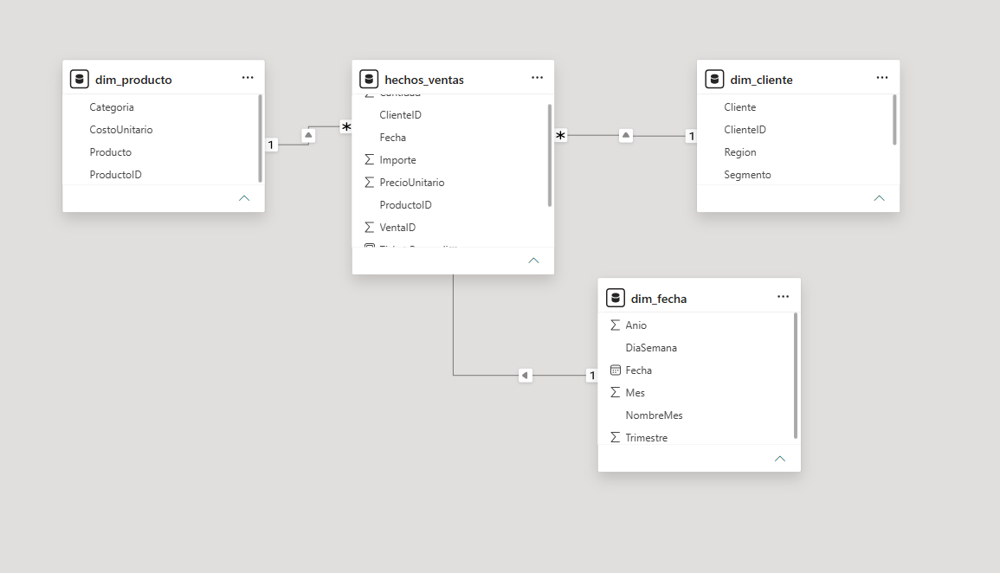
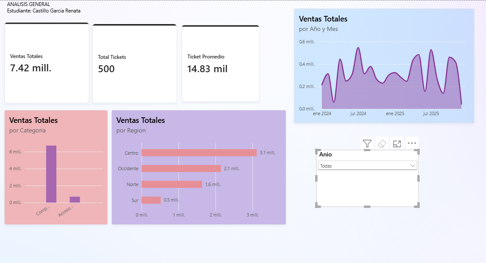
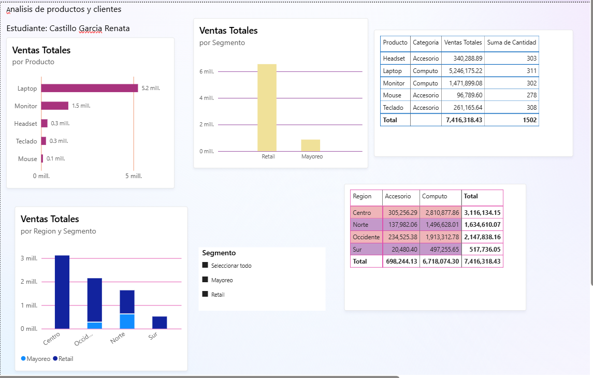
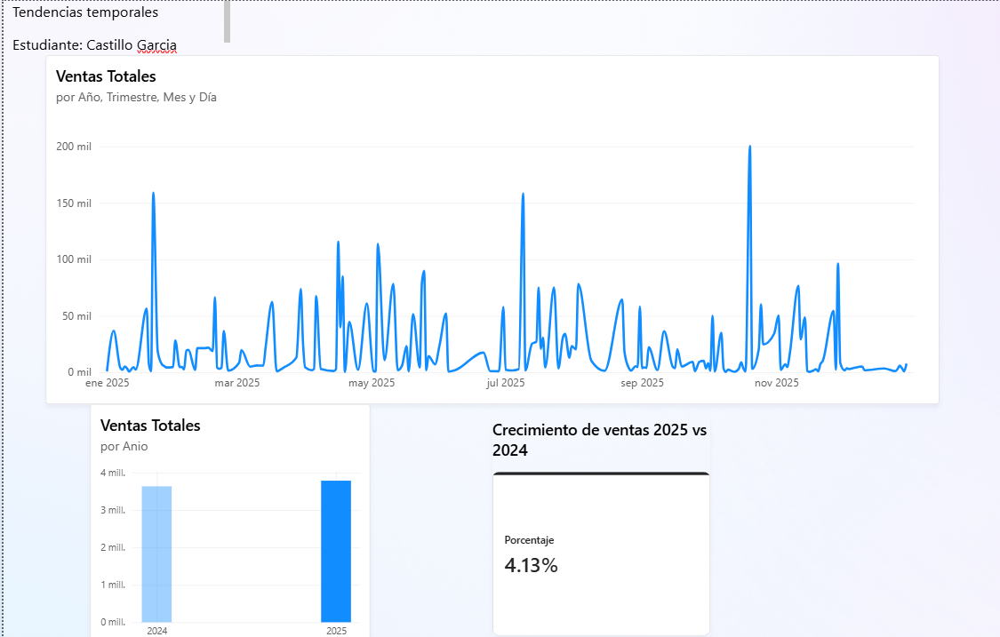
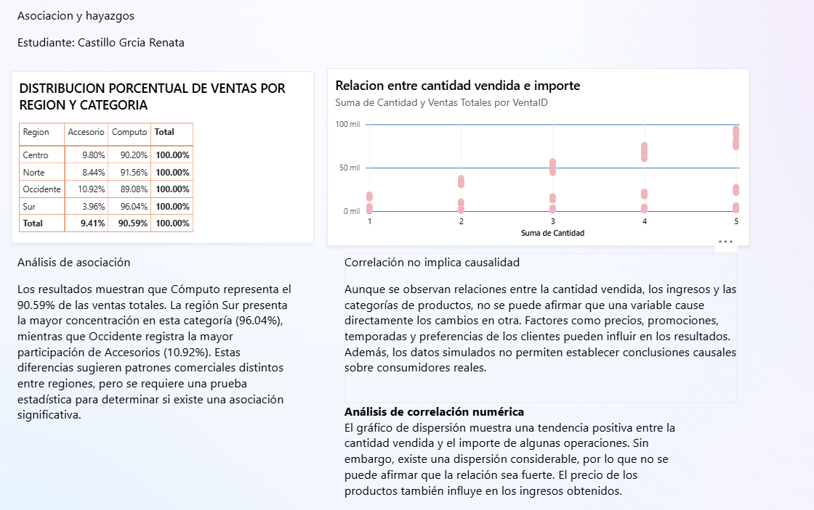

Ventas totales
$7,416,318.43
Suma de los importes de venta.Power BI | Visualización y Asociación de Datos
Estudiante: Castillo García Renata
Fecha: 06 de noviembre de 2026
Grupo: 6951
Analizar las ventas de una empresa de tecnología para identificar los productos, regiones y segmentos con mayor participación, así como evaluar la evolución de las ventas entre 2024 y 2025.
Decisión: Determinar dónde concentrar los esfuerzos comerciales.
Usuario: Gerente de ventas.
$7,416,318.43
Suma de los importes de venta.500
Número de ventas únicas.$14,832.64
Ventas totales entre tickets.Se utilizaron cuatro archivos CSV: hechos_ventas, dim_producto, dim_cliente y dim_fecha.
En Power Query se revisaron los tipos de datos, valores nulos, errores y columnas innecesarias. Posteriormente se construyó un modelo estrella relacionando las dimensiones con la tabla de hechos.
| Revisión | Tratamiento |
|---|---|
| Tipos de datos | Asignación de tipos correctos. |
| Valores nulos | Verificación de columnas. |
| Errores | Comprobación de calidad. |
| Columnas adicionales | Eliminación de columnas innecesarias. |





La categoría Cómputo concentra el 90.59% de las ventas. La región Sur presenta una participación del 96.04% en Cómputo, mientras que Occidente registra la mayor proporción de Accesorios, con 10.92%.
El gráfico de dispersión muestra una tendencia positiva entre cantidad e importe, aunque existe variabilidad considerable.
Estas relaciones no demuestran que una variable cause cambios en otra. Factores como precios, promociones y temporadas pueden influir. Los datos simulados tampoco permiten generalizar los resultados a consumidores reales.
El análisis utiliza datos simulados, por lo que sus resultados son ilustrativos. No se realizaron experimentos causales ni pruebas formales de significancia estadística.